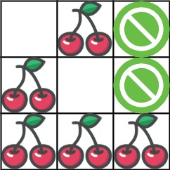

741. 摘樱桃
去程回程看成两个人同时走：k 步时两人必在同一条反对角线上，dp[k][i1][i2] 记两人位置；同格樱桃只摘一次。
思路
- 一个人走两趟会因「摘过的变空」互相影响，把回程倒过来看：两个人同时从 (0,0) 走到终点。
- 两人每步都右/下走，步数相同时
i1 + j1 == i2 + j2 == k，状态只要记两个行号。 - 转移：两人各自从上/左来，四种组合取最大；
i1 == i2时同格樱桃只加一份。 -1表示这个状态走不到（被荆棘挡或前一步全死）；终点仍是-1说明无通路，返回 0。
图解
最优解
1import java.util.*;2 3class Solution {4 public int cherryPickup(int[][] grid) {5 int n = grid.length, N = 2 * n - 1;6 // dp[k][i1][i2]：两人同走 k 步、分别在第 i1、i2 行（同一条反对角线）的最多樱桃；-1 = 走不到7 int[][][] dp = new int[N][n][n];8 for (int[][] a : dp) for (int[] r : a) Arrays.fill(r, -1);9 dp[0][0][0] = grid[0][0];10 for (int k = 1; k < N; k++) {11 for (int i1 = Math.max(0, k - n + 1); i1 <= Math.min(k, n - 1); i1++) {12 int j1 = k - i1;13 if (grid[i1][j1] == -1) continue;14 for (int i2 = Math.max(0, k - n + 1); i2 <= Math.min(k, n - 1); i2++) {15 int j2 = k - i2;16 if (grid[i2][j2] == -1) continue;17 // 上一步两人各自从左或上来，四种组合取最大18 int best = -1;19 for (int p1 = i1 - 1; p1 <= i1; p1++)20 for (int p2 = i2 - 1; p2 <= i2; p2++) {21 if (p1 < 0 || p2 < 0) continue;22 best = Math.max(best, dp[k - 1][p1][p2]);23 }24 if (best < 0) continue;25 // 两人同格只摘一次26 int add = grid[i1][j1];27 if (i1 != i2) add += grid[i2][j2];28 dp[k][i1][i2] = best + add;29 }30 }31 }32 // 走不到终点说明没有任何通路，摘 0 个33 return Math.max(dp[N - 1][n - 1][n - 1], 0);34 }35}题目
给你一个 n x n 的网格 grid ，代表一块樱桃地，每个格子由以下三种数字的一种来表示：
0表示这个格子是空的，所以你可以穿过它。1表示这个格子里装着一个樱桃，你可以摘到樱桃然后穿过它。-1表示这个格子里有荆棘，挡着你的路。
请你统计并返回：在遵守下列规则的情况下，能摘到的最多樱桃数：
- 从位置
(0, 0)出发，最后到达(n - 1, n - 1)，只能向下或向右走，并且只能穿越有效的格子（即只可以穿过值为0或者1的格子）； - 当到达
(n - 1, n - 1)后，你要继续走，直到返回到(0, 0)，只能向上或向左走，并且只能穿越有效的格子； - 当你经过一个格子且这个格子包含一个樱桃时，你将摘到樱桃并且这个格子会变成空的（值变为
0）； - 如果在
(0, 0)和(n - 1, n - 1)之间不存在一条可经过的路径，则无法摘到任何一个樱桃。
示例 1：

输入：grid = [[0,1,-1],[1,0,-1],[1,1,1]] 输出：5 解释：玩家从 (0, 0) 出发：向下、向下、向右、向右移动至 (2, 2) 。 在这一次行程中捡到 4 个樱桃，矩阵变成 [[0,1,-1],[0,0,-1],[0,0,0]] 。 然后，玩家向左、向上、向上、向左返回起点，再捡到 1 个樱桃。 总共捡到 5 个樱桃，这是最大可能值。
示例 2：
输入：grid = [[1,1,-1],[1,-1,1],[-1,1,1]] 输出：0
提示：
n == grid.lengthn == grid[i].length1 <= n <= 50grid[i][j]为-1、0或1grid[0][0] != -1grid[n - 1][n - 1] != -1
题面取自力扣当前版本。
数据快照 2026-11-04。题面版权归力扣所有，本站点仅供本人学习使用，请勿对外发布。